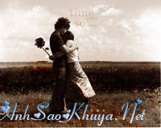

|
Anh sẽ không bao giờ biết được rằng mỗi khi em nói không nhớ anh là lúc đó em đã nhớ anh thật nhiều thật nhiều… Anh sẽ không bao giờ biết được rằng anh là người mà em nhớ đến trước khi đi ngủ và sau khi em thức giấc. Anh sẽ không bao giờ biết được rằng khi gặp anh em giả vờ như không quan tâm nhưng khi anh quay đi thì em lại nhìn theo anh.  Anh sẽ không bao giờ biết được rằng mỗi khi em bị bệnh thì em lại lo lắng cho anh hơn vì anh đang đi công tác xa không có ai chăm sóc. Anh sẽ không biết được rằng em đã hủy hết mọi cuộc hẹn ngày thứ bảy với bạn bè và chỉ chờ điện thoại của anh thôi. Anh sẽ không biết được rằng em đã học nấu những món thật ngon để làm cho anh ăn nhưng lại hay nói là em không biết nấu ăn đế cho anh cười. Anh sẽ không biết được rằng mỗi ngày em đều xếp một ngôi sao may mắn dành cho anh và gởi vào đó những lời chúc tốt đẹp nhất. Anh sẽ không biết được rằng khi đi một nơi thật đẹp thì em chỉ muốn có ba mẹ và còn một người nữa là anh bên cạnh để cùng chia sẽ cảm xúc. Anh sẽ không biết được rằng điện thoại của em chỉ lưu được có 75 tin nhắn, vì vậy trước khi xóa những tin nhắn cũ của anh, em đã đọc đi đọc lại cả chục lần và ghi cẩn thận vào một cuốn sổ nhỏ. Anh sẽ không biết được rằng anh là người đầu tiên mà em muốn chia sẻ niềm vui và nỗi buồn. Anh sẽ không biết được rằng anh là người con trai đầu tiên mà em chọn làm người yêu mặc dù xung quanh em có rất nhiều chàng trai tán tình. Anh sẽ không biết được rằng em đã thích ăn táo mặc dù trước đây em chỉ nhìn thôi chứ không thích ăn, nguyên nhân là anh thường mang táo cho em ăn. Anh sẽ không biết rằng em luôn luôn đến điểm hẹn sớm khoảng 10 phút vì em không muốn anh chờ đợi em, còn anh thì cho em chờ tới gần nửa tiếng mà cũng không thèm hỏi xem em đến đã lâu chưa? Anh sẽ không biết rằng em đã buồn như thế nào khi anh quên ngày 8/3 vì quá bận rộn cho chuyến công tác. Anh sẽ không biết được rằng em đã xúc động gần như muốn khóc khi trên bàn em có một món quà và cái thiệp nhỏ xinh do chính tay anh vẽ vào ngày sinh nhật của em ( mặc dù món quà đó đến muộn một ngày do anh đi công tác). Anh sẽ không biết được rằng em thích nhìn thấy anh cười, nhìn anh nói mặc dù anh là người rất ít nói, ít cười. Anh sẽ không biết được rằng nỗi sợ hãi lớn nhất của em không phải là bóng đêm mà là mất anh. Anh àh, còn rất nhiều điều mà anh chưa biết nhưng giờ đây chắc anh sẽ không bao giờ được biết vì anh đã xa em thật rồi. Anh sẽ không bao giờ biết được em đã khóc rất nhiều nhưng cố gắng làm như là không có chuyện gì xảy ra cả để anh không bị day dứt khi ra xa em. Anh sẽ không bao giờ biết được là em đã nhắn tin cho anh rồi lại thôi rồi lại nhắn nhưng rồi lại thôi... Anh sẽ không bao giờ biết được rằng dù xa anh nhưng em vẫn nhớ anh... Nhưng một điều mà anh biết được là em luôn chúc anh hạnh phúc mãi mãi… Nguồn: ASK sưu tầm || Tham gia bình luận TẠI ĐÂY ||
Bạn vô tình đọc ở đâu đó một câu chuyện tình cảm động hoặc một câu chuyện do chính bạn viết ra. Hãy đến với chúng tôi để cùng nhau chia sẻ: wWw.anhsaokhuya.net
Chung tay vì một thế giới online lành mạnh !
|